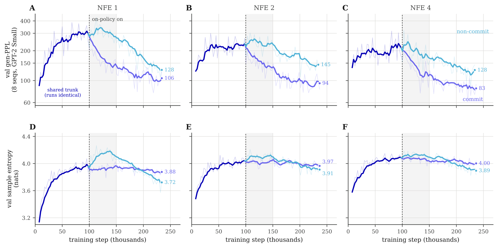
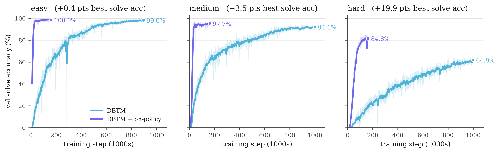
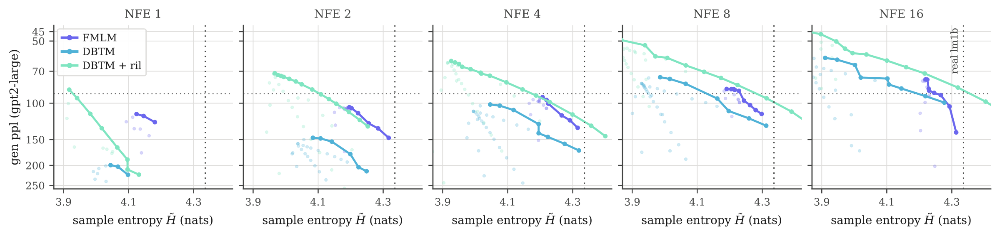
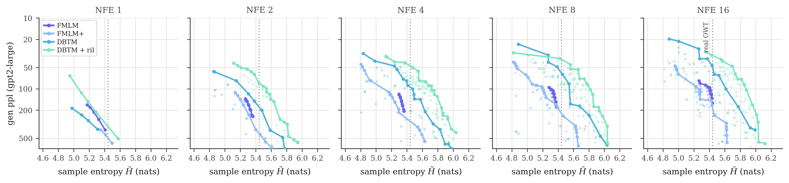

Contents
Autoregressive language models generate one token at a time from left-to-right. Diffusion and flow models start from noise and denoise every position in parallel, which promises faster generation and bidirectional context. However, parallel decoding only matters if it significantly reduces the denoising steps needed to obtain a clean sequence, and that is exactly where discrete generative models struggle.
In this article, we will start with why few-step discrete generation is hard and why the usual fix, distilling a flow map from a teacher, is expensive. Then we look at what happens when a flow's velocity field no longer depends on time. Its trajectories end at the vertices of the simplex, and the map to those endpoints satisfies a simple conservation equation. That equation can be solved directly from data with an iterative optimization algorithm that is minimized at the time-independent one-step map at convergence. Finally, we turn the learned map into a sampler whose extra function evaluations act as refinement steps instead of ODE integration steps, and show that it excels on language modeling, Sudoku, and GSM8K against both continuous and discrete diffusion baselines in few NFE.
The challenge of few-step discrete generation
Why parallel decoding needs many steps, and why compressing a flow usually needs a teacher.
1.1Parallel decoding breaks joint structure
Why does masked discrete diffusion need so many steps?
Consider a training set with exactly two sequences, New York and San Francisco, each with probability ½. A masked diffusion model sees both positions masked and predicts each one from the same context. Its marginals are correct, since the first position is New or San with probability ½ each, and the second is York or Francisco with probability ½ each.
The problem appears when we sample both positions at once. Because each position is drawn independently, half the samples are New Francisco or San York, which never appeared in the data. With two steps, we unmask one position, condition on it, and only then predict the next, so every sample is valid. In general, discrete diffusion approximates each transition by a product over positions,
$$p_{t\mid s}(y_t\mid y_s)\;\approx\;\prod_{\ell=1}^{L}p^{\ell}_{t\mid s}\big(y^\ell_t\mid y_s\big),$$which is nearly exact for tiny steps and increasingly wrong for large ones. Fewer steps means more tokens per step, which means more factorization error. No amount of model capacity fixes this, because a product of marginals cannot represent the correlation.
1.2Generative flows and stochastic interpolants
A continuous-time path between a prior and the data distribution
Flow-based models avoid the factorization altogether. A stochastic interpolant [5] connects a sample from the prior to a sample from the data along an endpoint-conditioned path, and the model learns the average velocity of all paths passing through each point.
Here $\alpha_0=1$ and $\alpha_1=0$, so $I_0=x_0$ and $I_1=x_1$. We use the schedule $\alpha_t=(1-t)^a$, where $a=1$ gives the linear interpolant. Each path $(x_0,x_1)$ has its own velocity $\dot I_t$. Many paths cross the same point at the same time, so the regression target $b_t(x)$ is their conditional mean. Integrating $\dot X_t=b_t(X_t)$ from $X_0\sim\mu_0$ reproduces the interpolant's marginals at every time, so $X_1\sim\mu_1$.
1.3Continuous flows on the simplex
How do we generate discrete sequences with a continuous flow?
Embed token $j$ as the one-hot vector $e_j\in\mathbb R^V$. The convex hull of these vectors is the probability simplex $\Delta^{V-1}$, and a sequence of $L$ tokens is a vertex configuration in $(\Delta^{V-1})^L$. The data distribution therefore lives on a very low-dimensional set, the vertices of the simplex.
We draw $x_0\sim\mathcal N(0,\sigma^2 I_V)$ independently at each position in the ambient space $\mathbb R^{V\times L}$ and flow toward the vertices. At the end, we read off each token with an argmax.
1.4The cost of sampling with many function evaluations
Integrating the ODE requires many small steps
The catch is inference cost. To follow $b_t$ accurately, a flow-matching sampler needs many small Euler steps, and each step is one network evaluation (NFE). Reducing that count means taking fewer, larger steps, which requires knowing where a trajectory goes over a finite interval rather than only its instantaneous direction. A flow map provides exactly this by learning the solution operator, so it can take large jumps along the same trajectory.
1.5Flow maps for trajectory distillation
Jumping directly between any two times along the ODE
A flow map $X_{s,t}$ sends the state at time $s$ to the state at time $t$ on the same trajectory. It is convenient to write it in terms of a mean velocity over the interval [8].
On the diagonal, $v_{s,s}=b_s$, so the instantaneous velocity can be trained with the usual flow-matching loss. Off the diagonal, there is no direct regression target. The model must learn how local predictions compose, which requires consistency objectives such as the semigroup identity $X_{t,u}\circ X_{s,t}=X_{s,u}$. Discrete targets add one more difficulty, because the posterior over token identity changes abruptly within a narrow window of $t$, which motivates the time reparameterization used by flow map language models [3].
1.6The distillation bottleneck
Few-step flow maps depend on a pretrained teacher and time conditioning
Flow maps make few-step generation possible, but the way they are usually trained introduces two costs.
- Few-step flow maps are distilled from a teacher flow. The student is capped at the teacher's quality and needs a two-stage pipeline. Self-distillation avoids the teacher by bootstrapping from the model's own predictions, but then it chases a moving target.
- Flow maps are conditioned on time. A two-time map $X_{s,t}$ has to learn every jump between every pair $(s,t)$, both diagonal and off-diagonal. That is a far larger space of targets than a sampler ever visits.
What we want is a one-step map that jumps to a clean sequence every time it is applied, and that we can learn from data alone.
The questionCan we learn a one-step map directly from data, with no teacher and no time conditioning?
Autonomous flows on the simplex
Remove time from the velocity field, and what remains are fixed basins, absorbing vertices, and a map that is constant along every path.
2.1Taking the time average of the flow velocity
What if the velocity field did not depend on time?
Keep the same interpolant, but regress the velocity onto a field that sees only the state, with $t\sim\mathcal U[0,1]$ hidden from the model.
The minimizer is still a conditional expectation, but now it averages over time as well as over endpoints. Write $\mu_t$ for the density of $I_t$. Because $t$ is uniform, a training state $x$ was produced at time $t$ with posterior probability $p(t\mid x)=\mu_t(x)/\int_0^1\mu_{t'}(x)\,dt'$. By the tower property,
Each time slice contributes where it is likely to have produced $x$. This is not a uniform average of the fields $b_t$. The resulting field defines an autonomous ODE, $\tfrac{d}{ds}X_s(x)=b(X_s(x))$ with $X_0(x)=x$. The autonomous flow runs on a separate clock (denoted $s\in [0,\infty)$) to the time-dependent flow and nothing forces it to reach the target at $s=1$, so it instead runs over a potentially infinite time horizon with hitting time $\tau(x)$.
What the time-dependent field does. For a single token with vertex probabilities $p_j$ and the linear schedule, the endpoint posterior is a softmax, $w_j(x,t)\propto p_j\exp\!\big(\beta(t)x_j\big)$ with $\beta(t)=t/\big(\sigma^2(1-t)^2\big)$. The field is $b_t(x)=\big(D_t(x)-x\big)/(1-t)$, where $D_t=\sum_j w_j e_j$ is the posterior-mean denoiser. If we freeze $t$, the equilibria solve $x=\operatorname{softmax}(\log p+\beta(t)x)$. At $t=0$ there is a single attractor at the mean $p$. As $\beta$ grows, new attractors appear at staggered times and move from the interior toward the vertices. A particle chasing moving attractors follows a curved path.
What the autonomous field does. Its stable equilibria are exactly the vertices, and its basins of attraction never move.
2.2Beckmann's transportation problem
Does the autonomous flow provably generate the target distribution?
An autonomous flow does not reproduce the interpolant's marginals at intermediate times, but it inherits a conservation law from them. Integrating the continuity equation $\partial_t\mu_t+\nabla\cdot(b_t\mu_t)=0$ over $t\in[0,1]$ telescopes the time derivative into the two endpoint densities.
The prior supplies probability mass into the time-integrated current $j$ (source), and the data manifold becomes the sink that removes it. Because $\nu\gt0$ away from the data, $j$ and $b$ point in the same direction. They share oriented flow lines and differ only in speed, so the autonomous flow moves mass along the lines of a current that starts at $\mu_0$ and ends at $\mu_1$. When $\mu_1$ is singular, as it is for discrete data, the equality holds in the distributional sense. This source–sink constraint is the one in Beckmann's transportation problem [6], which gives the method its name, and its connection to Beckmann's problem and to optimal transport is developed in the Beckmann Transport Models paper [2].
The divergence condition alone does not rule out mass escaping to infinity or stalling in the interior. Under conditions on the prior, the target support, and the interpolant, the BTM analysis shows that the autonomous flow reaches the target support in finite time and that its endpoint map pushes the prior onto the target, $T_\#\mu_0=\mu_1$ [2, Prop. 1]. The next section states the corresponding result on the simplex.
2.3Every path ends on a vertex
Convergence of the autonomous flow on the vertices of the simplex in finite time
The divergence identity alone does not rule out probability escaping to infinity or getting trapped in the interior. Our convergence theorem closes those gaps for the simplex [1, Thm. 3.1], building on the continuous-state result for Beckmann transport models [2]. For almost every starting point $x_0$, the following three properties hold.
Part (iii) proves a unique feature of the autonomous flow of the linear interpolant. The field vanishes at the vertex, but its limit along every incoming direction $\omega$ has speed $\kappa_j(\omega)\ge\kappa_-\gt0$. Writing $r(s)=\|X_s-e_j\|$, once a trajectory is close enough, we get
$$\frac{dr}{ds}=\Big\langle\tfrac{X_s-e_j}{\|X_s-e_j\|},\,b(X_s)\Big\rangle\le-\frac{\kappa_-}{2},$$so the remaining travel time is at most $2r(s_{\text{entry}})/\kappa_-$. The particle arrives with nonzero speed and then stops at finite time.
What happens exactly at a vertex. The limit above is not the value at the vertex. If $\alpha_t\sim(1-t)^a$ as $t\to1$ with $a\ge1/V$ and the prior decays exponentially, the autonomous field vanishes at every vertex, $b(e_j)=0$, so absorbed trajectories stay put [1, Thm. C.1]. For the linear interpolant the field is therefore discontinuous at the vertices, vanishing at $e_j$ but approaching it with speed at least $\kappa_-$. This discontinuity is what makes arrival take finite time. If the schedule instead slows to a stop, $\dot\alpha_1=0$, then $b(x)\to0$ as $x\to e_j$ and the field is continuous at the vertices [1, Prop. C.5]. The speed bound above is specific to the linear case.
Why no mass escapes or stalls. We prove two lemmas that justify why no mass escapes or stalls away from the vertices [1, Lemmas C.4–C.5]. Far from the simplex the field behaves like $b(x)=-x\,(1+o(1))$, so $\langle b(x),x\rangle\lt0$ outside some ball $B(0,R_0)$, so every trajectory enters the ball in finite time and never leaves it. Inside the ball, the divergence condition away from the data, $\nabla\cdot(\nu b)=\mu_0$, gives $\tfrac{d}{ds}\big[\nu(X_s)\,J_s\big]=\mu_0(X_s)\,J_s$, where $J_s$ is the Jacobian determinant of the flow. A set of starting points that never approaches the data would carry an occupation mass that grows exponentially, by Grönwall's inequality, while staying bounded by $\nu$ of a bounded region. So that set has Lebesgue measure zero (it occupies no volume). Combined with finite arrival near the vertices, this gives the three properties of Theorem 3.1.
2.4Autonomous flow has straighter trajectories
Why prefer the autonomous flow over the time-dependent one?
A time-dependent trajectory curves because its field changes underneath it. It heads toward the mean, then bends as attractors appear and move. The autonomous field's basins are fixed from the start, so each particle heads almost directly to its destination. In the paper's toy comparison on the 2-simplex, the mean ratio of path length to chord length is about 1.09 for the autonomous flow versus 1.58 for the time-dependent flow. Straighter paths are easier to compress into a single jump.
2.5Eulerian and conservation equations
The defining equations of the autonomous flow and its transport map
Autonomous flows have a semigroup property, meaning that following the flow for time $\varepsilon$ and then for time $s$ is the same as following it for $s+\varepsilon$. Compare two ways of getting there. We can run the flow from $x$ a little longer, $X_{s+\varepsilon}(x)\approx X_s(x)+\varepsilon\,\partial_sX_s(x)$. Or we can first nudge the starting point along the field and then run for time $s$, $X_s(x+\varepsilon b)\approx X_s(x)+\varepsilon\,b\cdot\nabla X_s(x)$. Both land on the same point, which gives an equation for the flow as a function of its starting point.
Now let $s$ approach the hitting time. Once the trajectory is absorbed, it stops moving, so the right-hand side vanishes, with $\partial_sX_s(x)\to0$ as $s\to\tau(x)$. The limit of $X_s$ is the endpoint map $T$, and it satisfies a stationary equation.
The equation says that $T$ does not change as you move along the flow. Every point on the same path ends at the same vertex, so $T$ is constant along each trajectory. Moving across the flow, at a basin boundary, $T$ can jump. The exact endpoint map is piecewise constant, with discontinuities on basin boundaries.
2.6The autonomous transport map
Can we skip the path and jump straight to its end?
The one-step transport map is the long-time limit of the autonomous flow.
The long-time limit is on the left and the pushforward is on the right, meaning $\mu_0\big(T^{-1}(A)\big)=\mu_1(A)$ for every set $A$.
It has three properties that the rest of the method relies on.
- Constant along every trajectory. $T\big(X_s(x_0)\big)=T(x_0)$.
- Idempotent. $T\circ T=T$, so $T^{\circ k}=T^{\circ k'}$ for all $k,k'\in\mathbb N$. Once you reach the data, applying $T$ again changes nothing.
- Its level sets are the basins of the vertices.
The boundary condition is a key component of the definition. Any constant function $T(x)=c$ solves $b\cdot\nabla T=0$, but no constant function fixes all of the vertices. If $\widetilde T$ is constant along the same trajectories and equals the identity on $M_1$, then $\widetilde T(x)=\lim_{s\uparrow\tau(x)}\widetilde T(X_s(x))=T(x)$. The interior equation and the boundary condition together define the endpoint map uniquely along the trajectories that reach the data [1, Prop. 3.2].
Learning one-step maps without distillation
Turn the conservation equation into a regression problem that needs only data samples.
3.1Iteratively solving the conservation equation
How do we train $T$ without a teacher?
We use the Eulerian and conservation equations to define a training algorithm whose objective is minimized at the transport map. Initializing $T=\mathrm{id}$ as the identity (which already satisfies the boundary condition) we can iteratively minimize the residual of the conservation equation which pushes the map along the autonomous field until the residual vanishes when $T$ is the transport map.
Each training iteration advances the flow a little further, and the fixed point satisfies $b\cdot\nabla T=0$. One problem remains, which is that we don't have access to the marginal autonomous velocity $b$ (a quantity often estimated with a teacher model). However, since $b(x)$ is the conditional mean of the sampled velocity $\dot I_t$, and the directional derivative is linear in the direction, we can replace $b$ by $\dot I_t$ inside a regression without changing the fixed point.
$$\mathbb E_{t,x_0,x_1}\big[\dot I_t\cdot\nabla T_\theta(I_t)\mid I_t=x\big]=b(x)\cdot\nabla T_\theta(x).$$Regressing $T_\theta(I_t)$ onto the detached target $T_\theta(I_t)+\dot I_t\cdot\nabla T_\theta(I_t)$ performs one Euler step in expectation. Adding the boundary condition at clean data gives the optimal map as the solution of the following objective:
The directional derivative is a single Jacobian–vector product, so training does not need the marginal velocity from a pretrained teacher.
3.2A partially trained map still converges
What happens if training the map is not converged?
Suppose the trained map does not converge. The iterative training scheme means the map we have learned approximates the autonomous flow truncated at some finite time $T_\theta\approx X_t$, which can yield better and better approximations of the true map $T$ when we apply it repeatedly by the semigroup property.
Reapplying the map $k$ times acts like jumping along the autonomous flow, and the iterates stop changing once $kt$ reaches the hitting time. Generation therefore reduces to iterating one map until it reaches a fixed point.
3.3Training objectives
How to train the transport map effectively from data
For sequences, we parameterize $T_\theta(\cdot)=\operatorname{softmax}(f_\theta(\cdot))$ which outputs a categorical distribution at each position. The sums below run over positions outside a clean context set $\mathcal C$, which is introduced in Section 4.1 and is empty when no clean context exists before the first NFE. We use the following objectives, each of which encodes a constraint satisfied by the transport map.
The Euler-corrected target does not necessarily lie on the simplex, so the transport term uses squared error, while clean categorical targets use cross-entropy. The semigroup term is only effective late in training, because the identity map is already idempotent and satisfies the constraint, so consistency alone does not yield the transport we want. That leaves one more question. From our previous discussion, we notice that the boundary term only supervises perfectly clean inputs whereas all intermediate points along a flow should land on the vertices. While the transport objective enforces consistency over the trajectory, it is a rather indirect objective which preserves the posterior at any point. However, there is a point along each interpolant where the posterior reduces to a Dirac delta at a single vertex, which motivates the question: When and how can we directly enforce that points that have already committed to a vertex land on it?
3.4Commitment time of the flow trajectory
When does the time-dependent flow commit to a vertex on the simplex?
A naive way to anchor all ambient points to land on a vertex is to minimize the discrepancy between $T(I_t)$ and $x_1$ for all $t\in[0,1]$. However, this constraint only holds when the target is fixed and the posterior at $I_t$ is $\delta(x_1)$, and it does not hold for general times $t$ when each position must resolve its token identity relative to the other tokens in the sequence to form a jointly coherent sequence. Only after a specific time along the interpolant are all the tokens committed to a specific target, and only then can we enforce an additional loss that anchors to the committed target. We call this the commitment time $t^*$, and we derive an expression for it next.
A signal-plus-noise problem. Take one token with a uniform prior over $V$ vertices, fix its true endpoint $e_k$, and write $x=I_t=(1-\alpha_t)e_k+\alpha_tz$ with $z\sim\mathcal N(0,\sigma^2I)$ and $\alpha_t=(1-t)^a$. The posterior logits of the sampled state are
Everything about the schedule and the noise scale has collapsed into one signal-to-noise ratio $\rho$. The true token receives a planted signal $\rho^2$, and every token receives Gaussian noise with standard deviation $\rho$. The posterior mass on the target is
$$p(k\mid x)=\frac{e^{\rho^2+h_k}}{e^{\rho^2+h_k}+\sum_{j\ne k}e^{h_j}},$$and the competing sum has the form of a partition function in Derrida's Random Energy Model [7], with $V-1$ independent random energies. The typical largest competitor is $\max_{j\ne k}h_j\approx\rho\sqrt{2\log V}$. The target wins once its signal beats that maximum.
$$\underbrace{\rho^2}_{\text{target signal}}\approx\underbrace{\rho\sqrt{2\log V}}_{\text{largest competitor}}\quad\Longrightarrow\quad\rho^\star\approx\sqrt{2\log V}.$$Because $\rho(t)$ increases monotonically in $t$, we can invert this threshold to get a time.
Before $t^*$, the token is undecided and must be resolved jointly with the other positions. After $t^*$, the target vertex dominates, and further integration does not change the output. Commitment time depends on the vocabulary size $V$, the prior scale $\sigma$, and the schedule exponent $a$. Larger noise delays it, a faster-decaying schedule moves it earlier, and $V$ enters only through a logarithm.
3.5Commitment time across vocabularies
How does $t^*$ scale with vocabulary size and schedule?
The table below evaluates the commitment time for the vocabularies used in our experiments, with $\sigma=1$ and $a=1$.
| LM1B | OpenWebText | GSM8K | Sudoku | |
|---|---|---|---|---|
| Vocabulary $|V|$ | 30,522 | 50,257 | 49,152 | 12 |
| Noise scale $\sigma$ · exponent $a$ | 1 · 1 | 1 · 1 | 1 · 1 | 1 · 1 |
| $\sqrt{2\log|V|}$ | 4.545 | 4.653 | 4.648 | 2.229 |
| Commitment time $t^*$ | 0.820 | 0.823 | 0.823 | 0.690 |
Because $V$ enters only through $\sqrt{2\log V}$, the language vocabularies all commit at nearly the same time, while a 12-token Sudoku vocabulary commits much earlier. The commitment time gives us a principled answer to the question at the end of Section 3.3. Over $[t^*,1]$ the endpoint has already been decided, so we can anchor the map to it directly.
Before commitment, the transport objective shapes how the map changes along the flow and leaves different starting states free to choose different endpoints. After commitment, the anchor supplies a direct target. This also replaces the delicate time reparameterization that flow-map language models need. We still sample $t$ during training, but the network itself never sees it.
We found that changing the anchor time has a real impact empirically. Anchoring too early supervises toward a fixed target while the endpoint is still undecided, and the model collapses onto repetitive tokens while anchoring too late leaves the post-transition interval unsupervised and slows convergence [1, Table 12].
Training and sampling with fixed-point refinement
Because every application proposes a clean sequence, extra NFEs can refine a proposal rather than integrate an ODE.
In the exact theory, $T\circ T=T$, so one application reaches the data and further applications do nothing. A learned $T_\theta$ is only an approximation, and its first proposal can contain inconsistencies. While flow maps use additional computation to take smaller jumps along the ODE, DBTM generates the fixed endpoint by construction, so additional computation can be interpreted as fixed-point iteration that refines the final output.
4.1Clean-context interpolant
Training the map on partially clean sequences so that NFEs scale as refinement steps
Let $\mathcal C$ be a set of positions held at their clean values. We extend the interpolant so that context positions are one-hot tokens and every other position is noised to a single shared time $t$.
$T$ stays time-independent, but it is trained on this larger family, with a fixed fraction of samples that have no context at all. At inference, committed tokens become clean context, and the same map completes the rest.
4.2Commit, renoise, refine
Each NFE refines a partially clean sequence rather than integrating an ODE
The inference-time refinement loops through three steps.
- Propose and score. Apply the map, decode $\hat x^\ell=\arg\max T_\theta(\hat x)^\ell$, and compute a quality score $q^\ell$ for each token. Create the commit set with $q^\ell\ge\kappa$.
- Commit and renoise. Hold committed positions at their decoded tokens, $\hat x^\ell\leftarrow\arg\max(T_\theta(\hat x)^\ell)$ for $\ell\in\mathcal C$, and draw fresh noise $\hat x^\ell\sim\mathcal N(0,\sigma^2 I_V)$ everywhere else.
- Refine. Apply the map again, $\hat x\leftarrow T_\theta(\hat x)$, until every position is committed.
Each round costs one NFE, and the quality score comes from the same forward pass. Commitment also gives a natural stopping rule: sampling ends when every token passes the threshold, so the number of NFEs adapts to the sample instead of being fixed in advance.
4.3Commitment rules
Confidence- and quality-based commitment without extra NFEs
Each refinement round computes a per-token score that determines which positions are reliable enough to commit, and we consider two ways to compute it from the same forward pass with no extra NFEs.
The quality head shares the network trunk and is trained by binary cross-entropy against whether each proposed token is correct.
$$\mathcal L_\phi=\mathbb E_{x_0,x_1}\Big[\sum_\ell\operatorname{BCE}\Big(\mathbf 1\big[\hat x_1^\ell=x_1^\ell\big],\,q^\ell_\phi\big(T_\theta(x)\big)\Big)\Big].$$A threshold alone could stall if nothing is confident. Under a budget of $k$ rounds, with $\mathcal R_r$ the unresolved positions entering round $r$, we also ensure a minimum set of highest scoring tokens are committed.
The threshold keeps confident positions, and the commitment floor guarantees progress. In the last round, $n_k=|\mathcal R_k|$, so every remaining position is committed within $k$ NFEs.
4.4Closing the train–inference gap
Random training contexts ≠ the structured contexts the sampler builds
During standard training, context positions are chosen at random. During sampling, the context is chosen by the model, depends on its confidence, and can contain errors. This results in exposure bias, where the contexts the model builds from its own predictions at inference are out of distribution for the model. Removing time conditioning does not remove this bias. Refinement-in-loop (ril) training therefore constructs the partial-context interpolant from real, stop-gradient sampling rollouts of the current model and trains with the intermediate states of the rollout.
The right target depends on the coupling. In Sudoku, the clues determine the solution, so the rollout target can stay the ground-truth grid. In unconditional language generation, an independently paired noise sample and training sequence do not define a unique correct trajectory. If a rollout is already forming one coherent sentence, forcing it toward an unrelated paired sentence works against the model's own transport assignment. After a warm-up phase, we therefore distill earlier rounds toward the detached output of a deeper rollout that is assumed to be more coherent, which supplies a target that is consistent with the rollout's own noise-to-output coupling. This provides a way to further enhance sequence quality in the few-step regime but requires the map to be trained well on data first.
4.5Training with refinement-in-loop
Refinement-in-loop training improves convergence on both language modeling and reasoning
Turning on refinement-in-loop (ril) training partway through shows its effect directly on both language modeling and reasoning.


Refinement-in-loop improves even the first proposal (1 NFE). Relative to base DBTM, one-step generative perplexity drops by about 58% on LM1B and 65% on OpenWebText.
Experiments in language modeling and reasoning
Toy dynamics, unconditional generation on LM1B and OpenWebText, and conditional reasoning on Sudoku and GSM8K.
5.1Dynamics of the time-dependent flow on the simplex
The attractors of the time-dependent flow appear at late times
We first conduct toy experiments to characterize the dynamics of the time-dependent flow on the simplex. On a 3-simplex with a near-tie between the two most likely tokens, $p=(0.40,0.38,0.20,0.02)$, only one attractor exists from $t=0$ to $t=0.5$, at the dominant vertex. The others appear one at a time after $t=0.5$, at $0.535$, $0.607$, and $0.687$. Even a vertex with 95% of the leader's probability does not appear until $t=0.535$. This is why time-dependent trajectories first head toward the dominant vertex and then bend, and why we prefer the autonomous field, where all attractors exist at the vertices with defined probability basins from the start.
When do the other attractors form? Early on, $x_t$ is mostly noise, so the flow falls back on the prior. A single attractor starts at the mean $p$ and drifts toward the most likely vertex $e_l$. As $t$ grows, $\beta(t)=t/\big(\sigma^2(1-t)^2\big)$ acts as a rising inverse temperature. Writing $x_j$ for the $j$-th coordinate of a fixed point $x$ of the frozen field (its weight on vertex $e_j$), dividing the fixed-point equations for coordinates $l$ and $j$ cancels the softmax normalization,
$$\frac{x_l}{x_j}=\frac{p_l}{p_j}e^{\beta(t)\,(x_l-x_j)},$$where the prior favors $e_l$ and the exponential favors whichever coordinate is already larger, and that pull strengthens as $\beta$ grows. The attractor near $e_j$ appears when this equation first gains a stable solution, which happens approximately when
$$\beta-\log\beta\;\simeq\;1+\log\frac{p_l}{p_j}+\log(1+m),\qquad\text{i.e.}\qquad\frac{t_j}{(1-t_j)^2}\simeq-\sigma^2\,W_{-1}\!\left(-\frac{p_j}{p_l\,(1+m)\,e}\right),$$where $W_{-1}$ is the lower branch of the Lambert $W$ function and $m$ counts the probabilities comparable to but less than $p_l$ [1, Props. C.2–C.4, Cor. C.1]. Attractors therefore form in order of probability: if $p_j\gt p_k$, then $t_j\lt t_k$. For a standard Gaussian prior ($\sigma=1$), no attractor other than the dominant one forms before $t=0.5$. For the example below ($m=1$), the formula gives $0.553$, $0.598$, and $0.679$, against the exact times $0.535$, $0.607$, and $0.687$.
5.2Unconditional language modeling at few NFEs
DBTM reaches the coherence–diversity Pareto frontier with a few refinements
We train on LM1B and OpenWebText (OWT) and report generative perplexity (Gen-PPL) under GPT-2 Large [9] together with unigram entropy. Baselines include distilled discrete diffusion and continuous flow maps evaluated at matched NFE budgets. Both DBTM variants train for 200K steps, while FMLM is distilled for 100K steps from a 1M-step teacher.
A single perplexity number can be misleading, because a model that repeats tokens scores deceptively well. We therefore compare full Pareto frontiers over every inference-time knob (commit temperature, prior scale $\sigma$, and threshold $\kappa$ for DBTM, and churn and prior scale for FMLM) [10].


5.3Reasoning with DBTM
DBTM outperforms discrete and continuous methods on Sudoku and GSM8K in only a few NFEs
Sudoku. We measure one-shot exact-solve accuracy on 2,000 held-out puzzles at three difficulty levels. On the hard split, DBTM + ril solves 84.6% of puzzles at 4 NFE, 13.4 points above FMLM+ (71.2%). At 16 NFE it reaches 97.5%, compared with 81.4% for FMLM+. The best many-step baseline, Duo, reaches 58.4% using 128 NFE.
The trace below is a real 4-NFE sample from the paper. This illustrates the refinement loop: the first proposal is already mostly right, and each round commits the confident cells and fixes the rest against the growing context.
GSM8K. We additionally benchmark on the harder math reasoning task GSM8K. Trained on TinyGSM code [11] and evaluated zero-shot on the 1,319-problem GSM8K test set, DBTM + ril reaches 16.8% at 32 NFE, compared with 16.6% for FMLM+. This is competitive or superior to other continuous and discrete diffusion baselines with only 32 NFEs (versus 1,024 used by the discrete and continuous diffusion baselines). However, autoregressive models remain dominant, at 53.9% (sampled) and 63.3% (greedy) with 512 NFE.
5.4Comparison to flow maps for language modeling
Flow map language models and DBTM both achieve few-step generation with key differences
Flow map language models [3, 12], and DBTM share the same goal of few-step generation, but they differ in several key components, which we summarize below.
| Flow map LMs / DFM | DBTM (ours) | |
|---|---|---|
| Few-step generation | Yes | Yes |
| Learned object | Two-time map $X_{s,t}$ | Stationary endpoint map $T$ |
| Time conditioning | Yes ($s$ and $t$) | No |
| Teacher model | Yes | No |
| Each NFE is… | A discretized step along the ODE | A refinement of a clean proposal |
| Self-stopping | No, the step schedule is fixed in advance | Yes, it stops at the fixed point or when all tokens pass $\kappa$ |
| Training complexity | High, with diagonal/off-diagonal balancing over all $(s,t)$ | Low, with one model conditioned only on the current state |
| Train–inference mismatch | Yes, many $(s,t)$ jumps are unused at inference | Low, since interpolants cover inference states and ril training adds rollouts |
| Reasoning trace | No | Yes, every iterate is a clean sequence |
Conclusions
- An autonomous flow on the simplex gives straighter, time-averaged paths whose only stable equilibria are the vertices.
- The transport map solves a conservation equation, so it can be trained end-to-end from data, with no teacher and no time conditioning.
- Every application proposes a clean sequence, so extra NFEs become renoise-and-refine steps that self-correct against committed context.
- Across language and reasoning, DBTM improves on discrete diffusion and flow baselines at 1–16 NFE.
We’re excited to see the future extensions of this framework across modalities! For more details, read the DBTM paper as well as the BTM paper.
References
- Tang, Wang. Discrete Beckmann Transport Models for One-Step Language Modeling and Reasoning. arXiv 2026.
- Lee et al. Beckmann Transport Models: From Autonomous Flows to One-Step Maps. NeurIPS 2026.
- Lee et al. Flow Map Language Models: One-step Language Modeling via Continuous Denoising. NeurIPS 2026.
- Agarwal et al. Posterior Refinement: Fast Language Generation via Any-Order Flow Maps. arXiv 2026.
- Albergo et al. Stochastic Interpolants: A Unifying Framework for Flows and Diffusions. JMLR 2025.
- Beckmann. A Continuous Model of Transportation. Econometrica 1952.
- Derrida. Random-Energy Model: Limit of a Family of Disordered Models. Phys. Rev. Lett. 1980.
- Boffi et al. How to Build a Consistency Model: Learning Flow Maps via Self-Distillation. NeurIPS 2025.
- Radford et al. Language Models are Unsupervised Multitask Learners (GPT-2). OpenAI 2019.
- Pynadath, Shi, Zhang. Generative Frontiers: Why Evaluation Matters for Diffusion Language Models. arXiv 2026.
- Liu et al. TinyGSM: Achieving >80% on GSM8K with Small Language Models. arXiv 2023.
- Potaptchik et al. Discrete Flow Maps. arXiv 2026.
BibTeX
@article{tang2026discrete,
title={Discrete Beckmann Transport Models for One-Step Language Modeling and Reasoning},
author={Sophia Tang and Shiyi Wang},
journal={arXiv preprint arXiv:2609.15903},
year={2026},
url={https://arxiv.org/abs/2609.15903}
}
@inproceedings{cheukkit2026beckmann,
title={Beckmann Transport Models: From Autonomous Flows to One-Step Maps},
author={Lee Cheuk-Kit and Florentin Coeurdoux and Yuyuan Chen and Sophia Tang and Peter Potaptchik and Yilun Du and Michael S. Albergo and Eric Vanden-Eijnden},
booktitle={Advances in Neural Information Processing Systems},
year={2026},
url={https://arxiv.org/abs/2608.01692}
}